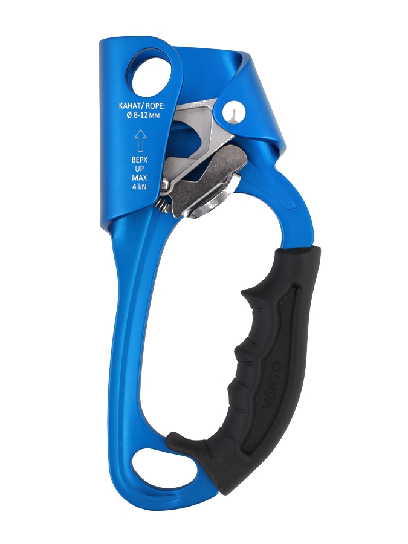

Жумар - отличный инструмент для поэъёма по крутым поверхностям. Позволяет организовать самостраховку. В случае потери опоры задержит вас на верёвке. Жумар компактен и удобен в использовании.
Цена - 4300 руб.
Зажим Жумар под правую руку предназначен для подъема по вертикальным или наклонным перилам, а также применяется при проведении спасательных работ. Соответствует EN 567 и ГОСТ EN 12841-2014 для использования в системах канатного доступа. Жумар совместим со статическими (ГОСТ EN 1891-2014) и динамическими (EN 892) канатами. Кулачок с зубьями конической формы выполнен из легированной стали. Имеется канавка для удаления грязи и льда, что обеспечивает надежную фиксацию на мокрой или замерзшей веревке. Защелка кулачка снабжена насечками для комфортной работы в перчатках. Овальное отверстие в верхней части предназначено для направления каната. Оно подходит для карабинов разных размеров. В нижней части жумара расположено отверстие, позволяющее одновременно присоединить два карабина класса В для стропа и стремени. Рукоятка жумара имеет эргономичную рельефную форму. Противоскользящее покрытие удобно при использовании в зимних условиях. Допустимая масса пользователя со всем оборудованием, снаряжением, одеждой (ГОСТ EN 12841-2014): 150 кг